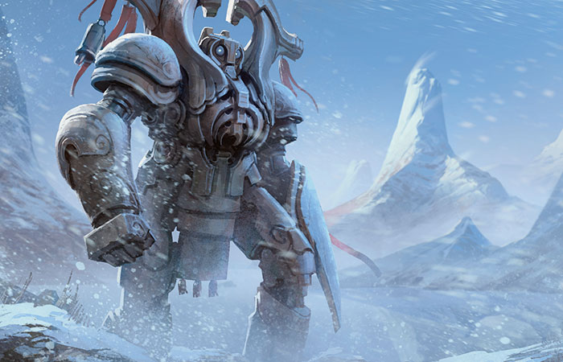

congratulations
welcome to the clockwork kingdom!
Join us for the adventure of a life time here in the clockwork kingdom.
The clockwork kingdom was founded by prince Owen lunem the third he built the kingdom entirely out of trade. The
kingdoms amazing mechs and machinery were because of the special crystal ore and strang spirit creaturs found in the
mountans and streams
there were three generations before the fall of the kingdom and the torential rains

for years the engineers had predicted that a giant rainstorm would sweep the land and destroy evrything in the
kingdom sadly king karrim the second was a fool and decided to keep the people from the truth and lied luckily the
engineers were able to secretly make a mech named scales to protect prince gyro from the storm sadly when the king
found out he locked prince gyro in the tower and the prince was lost during the storms when the tower flooded.
scales searched the castle endlessly trying to find the prince when scales found out that the prince was dead
he knew he had failed the prince and he went mad and used his power to transport the castle through time and has
been trying to save the prince ever since.the serpent is a half mech half organic being who gained the power to
controll time by acident he is orange and gray with cyan stripes his crest was made to help him swim during the
torential rains his sword was used to protect the prince from monsters his arms were added to help carry the
prince in case of danger his fangs are full of a sleeping venom to subdue anyone who wishes to do him harm his
eyes allow him to see in the dark and all of this was made form the R.I.M. workshop so dont forget to check it out
in the adventures page but beware the mech might still be out there so if you see a snake like mech get out of
there fast all of the sightings will be found in the documents page Goodbye!